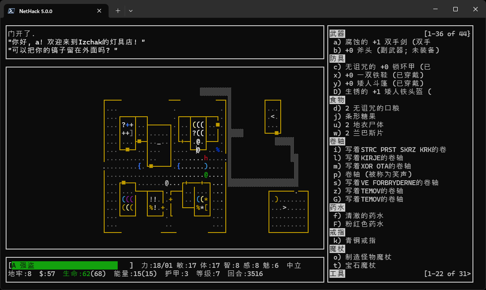

NetHack中文版 （Nethack-cn）
NetHack是一款以文本显示为主的类《龙与地下城》（Dungeons & Dragons(tm) - like）游戏。其标准tty显示界面和命令结构类似于Rogue。大多数平台还提供了其他更具图形化的显示选项。本站是该游戏其中一种基于原版5.0.0（以后会有更多）的非官方汉化版（Nethack-cn）的介绍页面。

游戏玩法
要开始游戏，你实际上只需掌握两个命令。命令?会显示可用命令列表（以及其他信息），而命令/则可识别你所看到的屏幕上的事物。
要赢得游戏（而非仅仅为了打破他人的高分记录而玩），你必须找到位于地牢第20层以下某处的岩德护身符，并将其带出。很少有人能达成这一目标；大多数人终其一生都未能成功。那些成功者将作为英雄中的英雄载入史册——随后他们又会想方设法让游戏变得更加困难。如果这款游戏对你来说已经变得太容易了，请参阅手册中的“conduct”章节。
当游戏结束时，无论是因为你死亡、退出，还是从洞穴中逃脱，NetHack都会向你提供一份得分榜。评分基于你行为的许多方面，但粗略估算约等于可将你在洞穴中发现的金币数量+(你的（实际）经验值×4)。带到出口的宝石可能价值不菲。若因自身原因死亡，将扣除10%的分数。
下载
目前Nethack-cn可下载的二进制文件（binary）有：
- 原版（目前只有Windows）
- Android版（原作：gurrhack/NetHack-Android）
- NetHack-3D（点击即可开始）（原作：JamesIV4/nethack-3d）
有用的链接
相关仓库：
以下是一些教程，对新手非常有用（不分先后）：
- 菜鸡写给菜鸡的 NetHack 入门教程
- Absolute Beginner's Guide for NetHack 3.4.1 v.1.81 (18.6.2002)（有翻译）
- StrategyWiki/NetHack/Beginning（英语）
- 大型nethack萌新向教程
- 花市灯昼：Nethack首次飞升经历
- 狄魔高根的补丁(1)
- NetHack/入门 - 华夏公益教科书
- nethack基本操作——新手必看【待完善】
- NetHack與SLASH'EM入門指南
- 豆瓣上“翠霞清風”的NetHack攻略（一）基础篇，（二）装备篇，（三）魔法与卷轴篇，（四）intrinsic与食物篇，（五）流程篇
- 【如果一生只做一件事，玩NetHack】NetHack六月大赛（补档）
- 上个世纪的NetHack说明书（日语，1991年出版的……）
- （广告位招租，欢迎联系）
有用的建议，来自NetHackWiki（可能有剧透，请自行选择观看）
- 基本策略（待翻译）
- 职业难度（待翻译）（省流：开局直接输入名字然后nvdy回车，通常是最简单的）
- Furey的NetHack建议（待翻译）
- 吃一堑长一智
- 又一次愚蠢的死（YASD）
- 坏主意（待翻译）
- 为什么我老是死？（待翻译）
- （广告位招租，欢迎联系）
有关的第三方网站，不属于本仓库：
- NetHackWiki（急需中文翻译）
- NetHack官网（英语）
- 原版GitHub仓库
- NAO (nethack.alt.org)，全球最大的NetHack在线服务器（英语）
- 以弗所的阿尔忒弥斯神庙
- 百度NetHack贴吧
- NetHack Scoreboard（英语）
- Nethack Utilities（英语）
- （广告位招租，欢迎联系）
FAQ
为什么我读不了原版已经有的存档？
原版编译时没有使用UTF-8，汉化版编译时用了（msbuild $env:SOLUTION_PATH /m /p:Configuration=$env:BUILD_CONFIGURATION /p:Platform=$env:BUILD_PLATFORM /t:Build）。自行编译可能有效（我也没试过）。为了保证您存档的安全，请在跨版本读档之前先把存档备份一下。
这句话读起来不通顺/这个字打错了！
发过来。然后等下一个Release。如果有能力的话，欢迎fork过来把它改掉然后拉个PR。
我觉得这个译名有个更合理的选择！
欢迎来这里讨论。
我发现了一个bug/我想提出一个建议。我该怎么做？
请在我们的GitHub Issues页面上提交您的宝贵意见。如果不行的话，请联系Francium-223。无论哪种情况，请先阅读我们的“联系我们”。
我想要为这个项目做出贡献，要怎么做？
请查看“贡献”页面.